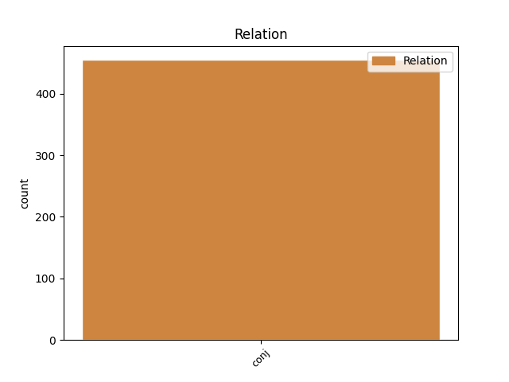
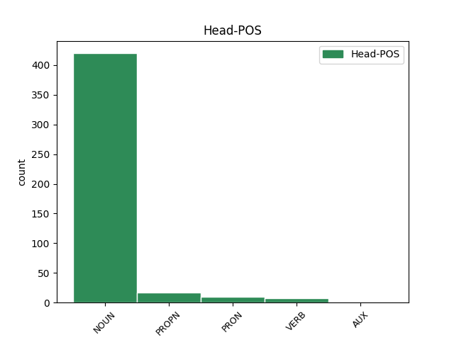
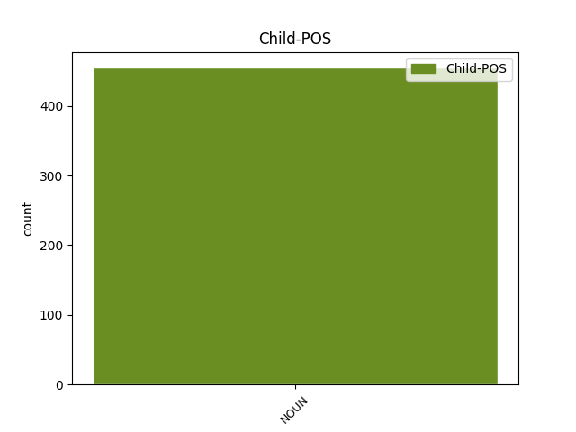

Distribution of features within this leaf



Agreement Rules sorted by frequency.
- When the dependent token is the conjunct(conj) of the head token, and the head token is NOUN and the dependent token is NOUN.
1 Pawlus _ _ _ _ 0 _ _ _
2 skalks skalks NOUN Nb Case=Nom|Gender=Masc|Number=Sing 0 _ _ _
3 gudis _ _ _ _ 0 _ _ _
4 iþ _ _ _ _ 0 _ _ _
5 apaustaulus apaustaulus NOUN Nb Case=Nom|Gender=Masc|Number=Sing 2 conj _ ref=TIT_1.1
6 Iesuis _ _ _ _ 0 _ _ _
7 Xristaus _ _ _ _ 0 _ _ _
8 bi _ _ _ _ 0 _ _ _
9 galaubeinai _ _ _ _ 0 _ _ _
10 gawalidaize _ _ _ _ 0 _ _ _
11 gudis _ _ _ _ 0 _ _ _
12 jah _ _ _ _ 0 _ _ _
13 ufkunþja _ _ _ _ 0 _ _ _
14 sunjos _ _ _ _ 0 _ _ _
15 sei _ _ _ _ 0 _ _ _
16 bi _ _ _ _ 0 _ _ _
17 gagudein _ _ _ _ 0 _ _ _
18 ist _ _ _ _ 0 _ _ _
19 du _ _ _ _ 0 _ _ _
20 wenai _ _ _ _ 0 _ _ _
21 libainais _ _ _ _ 0 _ _ _
22 aiweinons _ _ _ _ 0 _ _ _
23 þoei _ _ _ _ 0 _ _ _
24 gahaihait _ _ _ _ 0 _ _ _
25 unliugands _ _ _ _ 0 _ _ _
26 guþ _ _ _ _ 0 _ _ _
27 faur _ _ _ _ 0 _ _ _
28 mela _ _ _ _ 0 _ _ _
29 aiweina _ _ _ _ 0 _ _ _
30 iþ _ _ _ _ 0 _ _ _
31 ataugida _ _ _ _ 0 _ _ _
32 mela _ _ _ _ 0 _ _ _
33 swesamma _ _ _ _ 0 _ _ _
34 waurd _ _ _ _ 0 _ _ _
35 sein _ _ _ _ 0 _ _ _
36 in _ _ _ _ 0 _ _ _
37 mereinai _ _ _ _ 0 _ _ _
38 sei _ _ _ _ 0 _ _ _
39 gatrauaida _ _ _ _ 0 _ _ _
40 ist _ _ _ _ 0 _ _ _
41 mis _ _ _ _ 0 _ _ _
42 bi _ _ _ _ 0 _ _ _
43 anabusnai _ _ _ _ 0 _ _ _
44 nasjandis _ _ _ _ 0 _ _ _
45 unsaris _ _ _ _ 0 _ _ _
46 gudis _ _ _ _ 0 _ _ _
47 Teitau _ _ _ _ 0 _ _ _
48 walisin _ _ _ _ 0 _ _ _
49 barna _ _ _ _ 0 _ _ _
50 bi _ _ _ _ 0 _ _ _
51 gamainjai _ _ _ _ 0 _ _ _
52 galaubeinai _ _ _ _ 0 _ _ _
1 niþais _ _ _ _ 0 _ _ _
2 þos _ _ _ _ 0 _ _ _
3 þozei _ _ _ _ 0 _ _ _
4 miþarbaididedun _ _ _ _ 0 _ _ _
5 mis _ _ _ _ 0 _ _ _
6 in _ _ _ _ 0 _ _ _
7 aiwaggeljon _ _ _ _ 0 _ _ _
8 miþ _ _ _ _ 0 _ _ _
9 Klaimaintau Klemaintau PROPN Ne Case=Dat|Gender=Masc|Number=Sing 0 _ _ _
10 jah _ _ _ _ 0 _ _ _
11 anþaraim _ _ _ _ 0 _ _ _
12 gawaurstwam gawaurstwa NOUN Nb Case=Dat|Gender=Masc|Number=Plur 9 conj _ ref=PHIL_4.3
13 meinaim _ _ _ _ 0 _ _ _
14 þizeei _ _ _ _ 0 _ _ _
15 namna _ _ _ _ 0 _ _ _
16 sind _ _ _ _ 0 _ _ _
17 in _ _ _ _ 0 _ _ _
18 bokom _ _ _ _ 0 _ _ _
19 libainais _ _ _ _ 0 _ _ _
1 aþþan _ _ _ _ 0 _ _ _
2 silba _ _ _ _ 0 _ _ _
3 guþ _ _ _ _ 0 _ _ _
4 gawairþjis _ _ _ _ 0 _ _ _
5 gaweihai _ _ _ _ 0 _ _ _
6 izwis jūs PRON Pp Case=Acc|Gender=Masc|Number=Plur|Person=2|PronType=Prs 0 _ _ _
7 allandjo _ _ _ _ 0 _ _ _
8 jah _ _ _ _ 0 _ _ _
9 gahailana _ _ _ _ 0 _ _ _
10 izwarana _ _ _ _ 0 _ _ _
11 ahman ahma NOUN Nb Case=Acc|Gender=Masc|Number=Sing 6 conj _ ref=1THESS_5.23
12 jah _ _ _ _ 0 _ _ _
13 saiwala _ _ _ _ 0 _ _ _
14 jah _ _ _ _ 0 _ _ _
15 leik _ _ _ _ 0 _ _ _
16 unfairinona _ _ _ _ 0 _ _ _
17 in _ _ _ _ 0 _ _ _
18 quma _ _ _ _ 0 _ _ _
19 fraujins _ _ _ _ 0 _ _ _
20 unsaris _ _ _ _ 0 _ _ _
21 Iesuis _ _ _ _ 0 _ _ _
22 Xristaus _ _ _ _ 0 _ _ _
23 gafastaindau _ _ _ _ 0 _ _ _
1 aþþan _ _ _ _ 0 _ _ _
2 witum _ _ _ _ 0 _ _ _
3 þatei _ _ _ _ 0 _ _ _
4 goþ _ _ _ _ 0 _ _ _
5 ist _ _ _ _ 0 _ _ _
6 witoþ _ _ _ _ 0 _ _ _
7 jabai _ _ _ _ 0 _ _ _
8 ƕas _ _ _ _ 0 _ _ _
9 is _ _ _ _ 0 _ _ _
10 witoda _ _ _ _ 0 _ _ _
11 brukeiþ _ _ _ _ 0 _ _ _
12 witands _ _ _ _ 0 _ _ _
13 þatei _ _ _ _ 0 _ _ _
14 garaihtamma _ _ _ _ 0 _ _ _
15 nist _ _ _ _ 0 _ _ _
16 witoþ _ _ _ _ 0 _ _ _
17 satiþ _ _ _ _ 0 _ _ _
18 ak _ _ _ _ 0 _ _ _
19 witodalausaim _ _ _ _ 0 _ _ _
20 jah _ _ _ _ 0 _ _ _
21 untalaim _ _ _ _ 0 _ _ _
22 jah _ _ _ _ 0 _ _ _
23 unsibjaim _ _ _ _ 0 _ _ _
24 jah _ _ _ _ 0 _ _ _
25 frawaurhtaim _ _ _ _ 0 _ _ _
26 jah _ _ _ _ 0 _ _ _
27 unairknaim _ _ _ _ 0 _ _ _
28 jah _ _ _ _ 0 _ _ _
29 usweihaim _ _ _ _ 0 _ _ _
30 attans _ _ _ _ 0 _ _ _
31 bliggwandam _ _ _ _ 0 _ _ _
32 jah _ _ _ _ 0 _ _ _
33 aiþeins _ _ _ _ 0 _ _ _
34 horam _ _ _ _ 0 _ _ _
35 mannans _ _ _ _ 0 _ _ _
36 gaþiwandam ga-þiwan VERB V- Case=Dat|Gender=Masc|Number=Plur|Strength=Weak|Tense=Pres|VerbForm=Part|Voice=Act 0 _ _ _
37 liugnjam liugnja NOUN Nb Case=Dat|Gender=Masc|Number=Plur 36 conj _ ref=1TIM_1.10
38 ufarswaram _ _ _ _ 0 _ _ _
39 jah _ _ _ _ 0 _ _ _
40 jabai _ _ _ _ 0 _ _ _
41 ƕa _ _ _ _ 0 _ _ _
42 aljis _ _ _ _ 0 _ _ _
43 þizai _ _ _ _ 0 _ _ _
44 hailon _ _ _ _ 0 _ _ _
45 laiseinai _ _ _ _ 0 _ _ _
46 andstandiþ _ _ _ _ 0 _ _ _
47 sei _ _ _ _ 0 _ _ _
48 ist _ _ _ _ 0 _ _ _
49 bi _ _ _ _ 0 _ _ _
50 aiwaggeli _ _ _ _ 0 _ _ _
51 wulþaus _ _ _ _ 0 _ _ _
52 þis _ _ _ _ 0 _ _ _
53 audagins _ _ _ _ 0 _ _ _
54 gudis _ _ _ _ 0 _ _ _
55 þatei _ _ _ _ 0 _ _ _
56 gatrauaiþ _ _ _ _ 0 _ _ _
57 ist _ _ _ _ 0 _ _ _
58 mis _ _ _ _ 0 _ _ _
1 jah _ _ _ _ 0 _ _ _
2 izwis _ _ _ _ 0 _ _ _
3 simle _ _ _ _ 0 _ _ _
4 wisandans wisan AUX V- Case=Acc|Gender=Masc|Number=Plur|Strength=Weak|Tense=Pres|VerbForm=Part|Voice=Act 0 _ _ _
5 framaþidans _ _ _ _ 0 _ _ _
6 jah _ _ _ _ 0 _ _ _
7 fijands fijands NOUN Nb Case=Acc|Gender=Masc|Number=Plur 4 conj _ ref=COL_1.21
8 gahugdai _ _ _ _ 0 _ _ _
9 in _ _ _ _ 0 _ _ _
10 waurstwam _ _ _ _ 0 _ _ _
11 ubilaim _ _ _ _ 0 _ _ _
12 iþ _ _ _ _ 0 _ _ _
13 nu _ _ _ _ 0 _ _ _
14 gafriþodai _ _ _ _ 0 _ _ _
15 in _ _ _ _ 0 _ _ _
16 leika _ _ _ _ 0 _ _ _
17 mammons _ _ _ _ 0 _ _ _
18 is _ _ _ _ 0 _ _ _
19 þairh _ _ _ _ 0 _ _ _
20 dauþu _ _ _ _ 0 _ _ _
21 du _ _ _ _ 0 _ _ _
22 atsatjan _ _ _ _ 0 _ _ _
23 izwis _ _ _ _ 0 _ _ _
24 weihans _ _ _ _ 0 _ _ _
25 jah _ _ _ _ 0 _ _ _
26 unwammans _ _ _ _ 0 _ _ _
27 jah _ _ _ _ 0 _ _ _
28 usfairinans _ _ _ _ 0 _ _ _
29 faura _ _ _ _ 0 _ _ _
30 imma _ _ _ _ 0 _ _ _
31 jabai _ _ _ _ 0 _ _ _
32 sweþauh _ _ _ _ 0 _ _ _
33 þairhwisiþ _ _ _ _ 0 _ _ _
34 in _ _ _ _ 0 _ _ _
35 galaubeinai _ _ _ _ 0 _ _ _
36 gaþwastidai _ _ _ _ 0 _ _ _
37 jah _ _ _ _ 0 _ _ _
38 gatulgidai _ _ _ _ 0 _ _ _
39 jah _ _ _ _ 0 _ _ _
40 ni _ _ _ _ 0 _ _ _
41 afwagidai _ _ _ _ 0 _ _ _
42 af _ _ _ _ 0 _ _ _
43 wenai _ _ _ _ 0 _ _ _
44 aiwaggeljons _ _ _ _ 0 _ _ _
45 þoei _ _ _ _ 0 _ _ _
46 hausideduþ _ _ _ _ 0 _ _ _
47 sei _ _ _ _ 0 _ _ _
48 merida _ _ _ _ 0 _ _ _
49 ist _ _ _ _ 0 _ _ _
50 in _ _ _ _ 0 _ _ _
51 alla _ _ _ _ 0 _ _ _
52 gaskaft _ _ _ _ 0 _ _ _
53 þo _ _ _ _ 0 _ _ _
54 uf _ _ _ _ 0 _ _ _
55 himina _ _ _ _ 0 _ _ _
56 þizozei _ _ _ _ 0 _ _ _
57 warþ _ _ _ _ 0 _ _ _
58 ik _ _ _ _ 0 _ _ _
59 Pawlus _ _ _ _ 0 _ _ _
60 andbahts _ _ _ _ 0 _ _ _
Disagree Examples:
1 armahairtiþa armahairtiþa NOUN Nb Case=Acc|Gender=Fem|Number=Sing 0 _ _ _
2 wiljau _ _ _ _ 0 _ _ _
3 jah _ _ _ _ 0 _ _ _
4 ni _ _ _ _ 0 _ _ _
5 hunsl hunsl NOUN Nb Case=Acc|Gender=Neut|Number=Sing 1 conj _ ref=MATT_9.13
1 jah _ _ _ _ 0 _ _ _
2 qimands _ _ _ _ 0 _ _ _
3 Iesus _ _ _ _ 0 _ _ _
4 in _ _ _ _ 0 _ _ _
5 garda _ _ _ _ 0 _ _ _
6 þis _ _ _ _ 0 _ _ _
7 reikis _ _ _ _ 0 _ _ _
8 jah _ _ _ _ 0 _ _ _
9 gasaiƕands _ _ _ _ 0 _ _ _
10 swigljans swiglja* NOUN Nb Case=Acc|Gender=Masc|Number=Plur 0 _ _ _
11 jah _ _ _ _ 0 _ _ _
12 managein managei NOUN Nb Case=Acc|Gender=Fem|Number=Sing 10 conj _ ref=MATT_9.23
13 auhjondein _ _ _ _ 0 _ _ _
14 qaþ _ _ _ _ 0 _ _ _
15 du _ _ _ _ 0 _ _ _
16 im _ _ _ _ 0 _ _ _
1 jah _ _ _ _ 0 _ _ _
2 bitauh _ _ _ _ 0 _ _ _
3 Iesus _ _ _ _ 0 _ _ _
4 baurgs _ _ _ _ 0 _ _ _
5 allos _ _ _ _ 0 _ _ _
6 jah _ _ _ _ 0 _ _ _
7 haimos _ _ _ _ 0 _ _ _
8 laisjands _ _ _ _ 0 _ _ _
9 in _ _ _ _ 0 _ _ _
10 gaqumþim _ _ _ _ 0 _ _ _
11 ize _ _ _ _ 0 _ _ _
12 jah _ _ _ _ 0 _ _ _
13 merjands _ _ _ _ 0 _ _ _
14 aiwaggeljon _ _ _ _ 0 _ _ _
15 þiudangardjos _ _ _ _ 0 _ _ _
16 jah _ _ _ _ 0 _ _ _
17 hailjands _ _ _ _ 0 _ _ _
18 allos _ _ _ _ 0 _ _ _
19 sauhtins sauhts* NOUN Nb Case=Acc|Gender=Fem|Number=Plur 0 _ _ _
20 jah _ _ _ _ 0 _ _ _
21 alla _ _ _ _ 0 _ _ _
22 unhailja unhaili NOUN Nb Case=Acc|Gender=Neut|Number=Plur 19 conj _ ref=MATT_9.35
1 ni _ _ _ _ 0 _ _ _
2 qam _ _ _ _ 0 _ _ _
3 lagjan _ _ _ _ 0 _ _ _
4 gawairþi gawairþi NOUN Nb Case=Acc|Gender=Neut|Number=Sing 0 _ _ _
5 ak _ _ _ _ 0 _ _ _
6 hairu hairus NOUN Nb Case=Acc|Gender=Masc|Number=Sing 4 conj _ ref=MATT_10.34
1 saei _ _ _ _ 0 _ _ _
2 frijoþ _ _ _ _ 0 _ _ _
3 attan atta NOUN Nb Case=Acc|Gender=Masc|Number=Sing 0 _ _ _
4 aiþþau _ _ _ _ 0 _ _ _
5 aiþein aiþei NOUN Nb Case=Acc|Gender=Fem|Number=Sing 3 conj _ ref=MATT_10.37
6 ufar _ _ _ _ 0 _ _ _
7 mik _ _ _ _ 0 _ _ _
8 nist _ _ _ _ 0 _ _ _
9 meina _ _ _ _ 0 _ _ _
10 wairþs _ _ _ _ 0 _ _ _
11 jah _ _ _ _ 0 _ _ _
12 saei _ _ _ _ 0 _ _ _
13 frijoþ _ _ _ _ 0 _ _ _
14 sunu _ _ _ _ 0 _ _ _
15 aiþþau _ _ _ _ 0 _ _ _
16 dauhtar _ _ _ _ 0 _ _ _
17 ufar _ _ _ _ 0 _ _ _
18 mik _ _ _ _ 0 _ _ _
19 nist _ _ _ _ 0 _ _ _
20 meina _ _ _ _ 0 _ _ _
21 wairþs _ _ _ _ 0 _ _ _
22 jah _ _ _ _ 0 _ _ _
23 saei _ _ _ _ 0 _ _ _
24 ni _ _ _ _ 0 _ _ _
25 nimiþ _ _ _ _ 0 _ _ _
26 galgan _ _ _ _ 0 _ _ _
27 seinana _ _ _ _ 0 _ _ _
28 jah _ _ _ _ 0 _ _ _
29 laistjai _ _ _ _ 0 _ _ _
30 afar _ _ _ _ 0 _ _ _
31 mis _ _ _ _ 0 _ _ _
32 nist _ _ _ _ 0 _ _ _
33 meina _ _ _ _ 0 _ _ _
34 wairþs _ _ _ _ 0 _ _ _